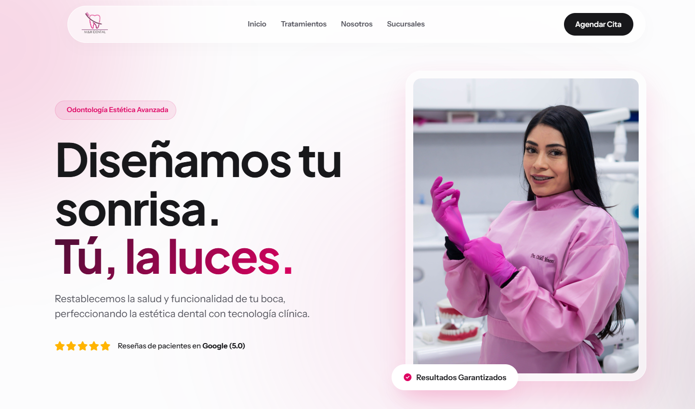
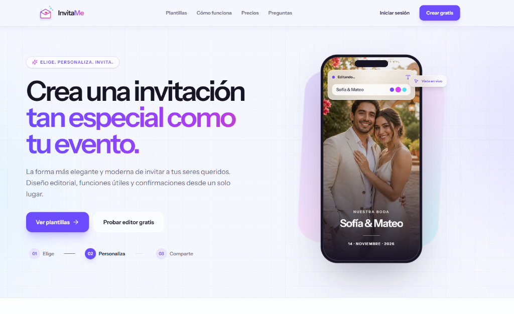
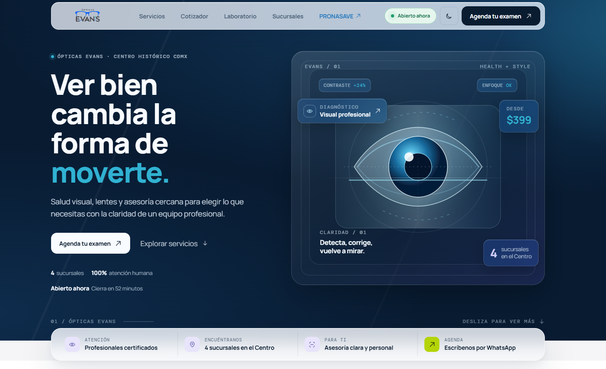
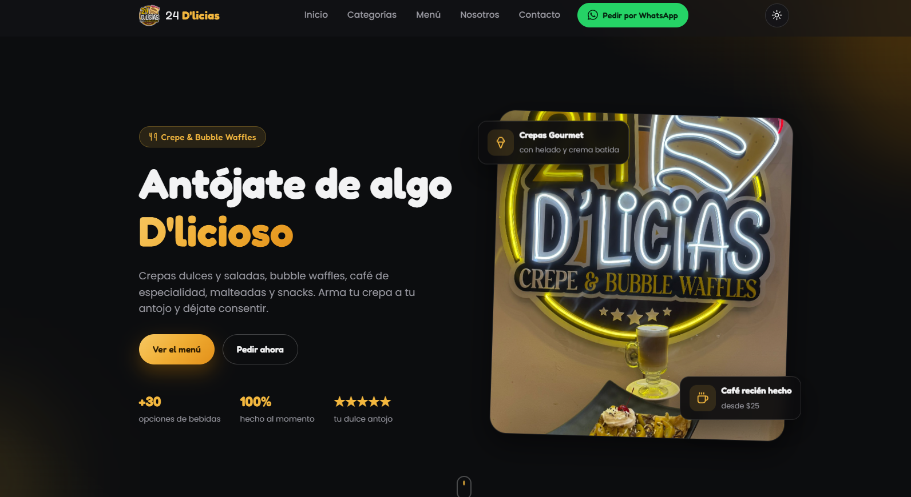
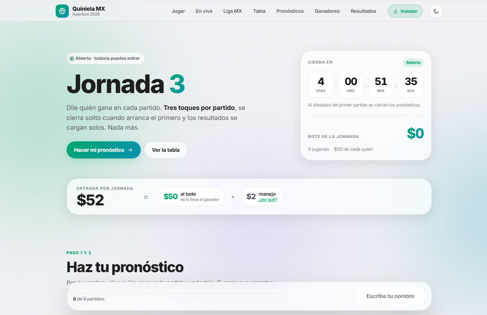

01 / 05↗
sonrisa+
MYHDental studio
MyH Dental
Brand siteUna experiencia clínica cálida y confiable para una clínica dental de nueva generación.
Desarrollador web · CDMX
Soy Jonathan A. Martínez. Diseño y construyo sitios web que se sienten tan bien como se ven: rápidos, responsivos y con personalidad.
01 Selección de trabajo
Cada proyecto parte de una pregunta sencilla:
¿cómo debería sentirse esta experiencia?

Una experiencia clínica cálida y confiable para una clínica dental de nueva generación.

Crea invitaciones digitales elegantes y modernas, tan especiales como tu evento.

Un escaparate visual y directo para ayudar a cada persona a encontrar su siguiente mirada.

Una vitrina digital apetitosa que convierte antojos en visitas, pedidos y momentos compartidos.

Una herramienta interactiva para vivir cada jornada, registrar pronósticos y competir con amigos.
02 Detrás de la pantalla
Me apasiona convertir ideas en experiencias digitales que las personas disfrutan usar. Pienso en la estructura, cuido los detalles y siempre dejo espacio para una buena sorpresa.
Desde una landing que presenta una marca hasta una herramienta que resuelve un problema real, me gusta estar cerca de todo el proceso: entender, diseñar, construir y pulir.
La curiosidad se vuelve mejor cuando termina en algo que funciona.
Cada decisión visual debe ayudar a entender, elegir o disfrutar.
Lo pequeño también cuenta: velocidad, claridad y una interacción memorable.
03 Cómo trabajo
Un proceso claro para que el proyecto
avance con confianza.
Conozco tu negocio, tus objetivos y a las personas que quieres alcanzar.
Convierto la estrategia en una dirección visual clara y con carácter.
Desarrollo una web sólida, rápida y lista para cualquier pantalla.
Probamos, ajustamos y ponemos la experiencia en manos de tus clientes.
¿Tienes un proyecto en mente?
Si buscas una web con intención, estás en el lugar correcto. Cuéntame qué quieres construir y te respondo con gusto.